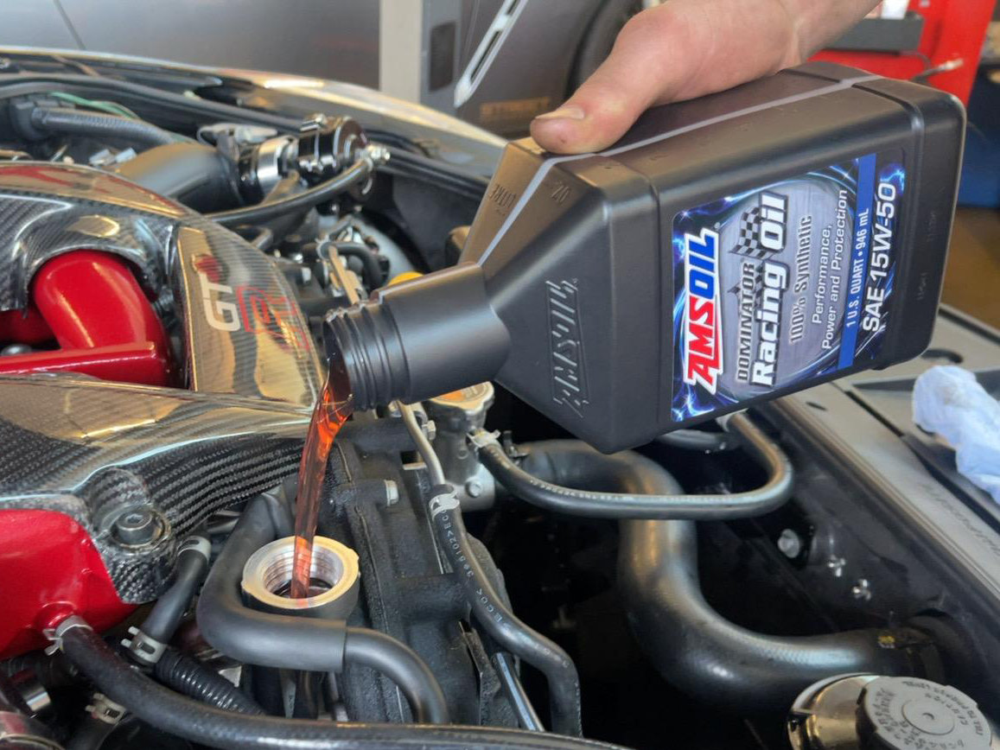
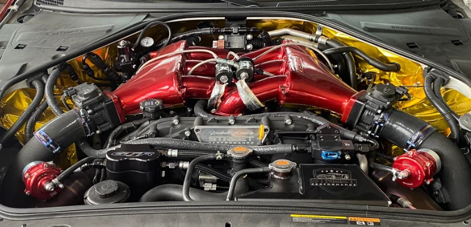
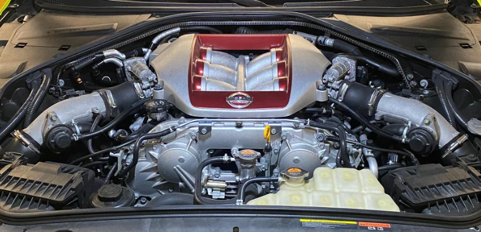
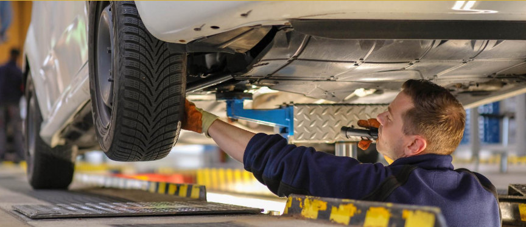

Shops & Community.
Entdecke unsere Shops und begleite uns auf Social Media.
Service & Reparaturen
Inspektion, Unterhalt und Reparaturen für unterschiedliche Fahrzeugmarken – mit hochwertigen Betriebsstoffen und passenden Ersatzteilen.

Ihr Fahrzeug.
Unsere Sorgfalt.
Ein gepflegtes Fahrzeug überzeugt nicht nur durch Leistung, sondern auch durch Zuverlässigkeit. Von der Motorwartung bis zu sicherheitsrelevanten Bauteilen kümmern wir uns um die Technik.
Motor & Ölservice
Wartungsarbeiten, Filterwechsel und Schutz des Motors.
Bremsen
Kontrolle und Instandsetzung für ein sicheres Fahrgefühl.
Fahrwerk
Abstimmung, Kontrolle und Komponenten für ein stabiles Handling.
AMSOIL
Performance-Öle und Schutz für anspruchsvolle Einsatzbereiche.
Tuning
Leistung entsteht im Zusammenspiel aller Komponenten. Wir beraten individuell und achten darauf, dass Umbauten technisch und fahrdynamisch zusammenpassen.


Mehr Leistung.
Ein Konzept.
Für ein stimmiges Setup betrachten wir nicht nur die Motorleistung, sondern ebenso Abgasanlage, Getriebe und das Zusammenspiel aller verbauten Teile.
Motorentechnik
Passende Hardware und Konzepte für ambitionierte Projekte.
Abgasanlagen
Performance, Klang und Charakter abgestimmt auf das Fahrzeug.
Getriebe
Optimierung von Schaltverhalten und Zuverlässigkeit.
ECU Kennfeldoptimierung
Individuelle Softwareanpassungen am Motorsteuergerät können das Ansprechverhalten und die Leistungsentfaltung eines Fahrzeugs optimieren.
Das volle Potenzial.
Sauber abgestimmt.
Bei einer ECU-Kennfeldoptimierung werden Steuerdaten individuell angepasst. Wir stimmen Lösungen auf das Fahrzeug und die eingesetzten Komponenten ab.
Auch für spezielle Motorsport-Projekte begleiten wir die Abstimmung der Antriebselektronik.
ECU-Anfrage senden ↗Leistungsmessung.
Messungen und Abstimmungen auf unserem Mainline-Prüfstand bieten eine fundierte Grundlage für Entwicklung, Diagnose und gezielte Optimierung.
Motorfahrzeugkontrolle (MFK)
Wir unterstützen bei der periodischen Prüfung und bei Fragen rund um technische Modifikationen und die dazugehörigen Fahrzeugdokumente.

Technik, die auch
rechtlich passt.
Bei Umbauten gehören die richtigen Unterlagen ebenso dazu wie die technische Ausführung. Wir beraten bei Fragen zur Zulassungsfähigkeit und helfen bei der Vorbereitung der Fahrzeugkontrolle.
MFK-Termin anfragen ↗Support the
Racing Team.
Motorsport lebt von Engagement. Mit einem Gönnerbeitrag unterstützt du das Racing-Team bei Rennveranstaltungen, Fahrzeugunterhalt und Saisonvorbereitung.
Gönner werden ↗Junior Racer
CHF 50.–Für alle, die das Team auf seinem Weg begleiten möchten.
Pro Racer
CHF 150.–Ein grösserer Beitrag für die kommende Rennsaison.
Real Street Performance GmbH
Fragen zu Tuning, Service oder einem individuellen Projekt? Wir freuen uns auf deine Kontaktaufnahme.
Kontakt
- Adresse
- Ebnatstrasse 162
8207 Schaffhausen, Schweiz - Telefon
- +41 (0)52 503 74 74
Öffnungszeiten
- Montag – Freitag
- 08:00 – 12:00
13:30 – 18:00 - Samstag
- Nach Vereinbarung
- Sonntag
- Geschlossen